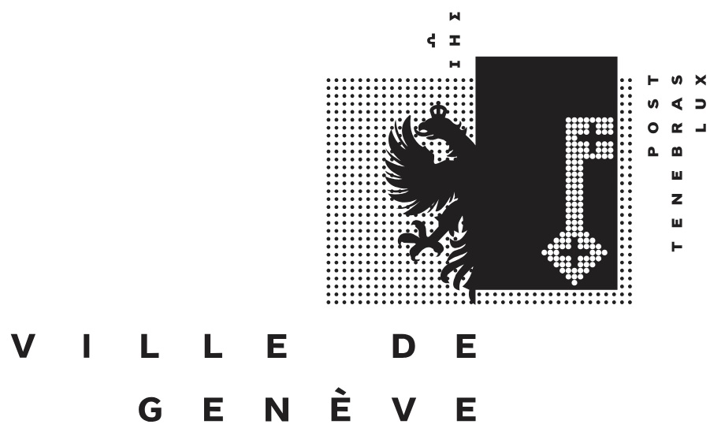
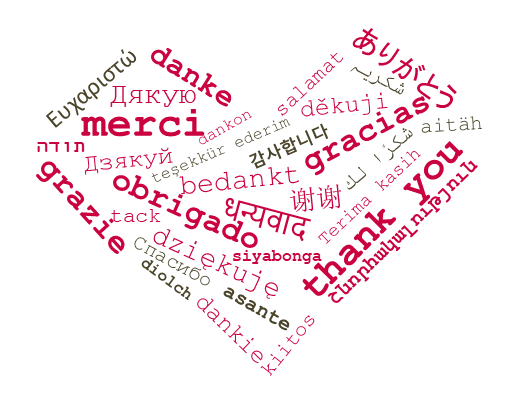

L'idée initiale de l'AGAS a été lancée en 1996 par David Viry et l'association a été fondée lors de la première assemblée générale en 1998. En 2025, elle a été reconnue d'utilité publique par l'administration fiscale cantonale de Genève.
Version actuelle: mars 2026
L'AGAS remercie la Ville de Genève pour son soutien.

Un grand merci aussi à nos membres et nos donneurs. C'est grâce à vous que l'AGAS a ses propres ressources, et peut ainsi demander un subside pour les compléter. Voici où nous en sommes:
Nos randonnées sont gratuites, mais nous avons quand-même quelques dépenses. Vos [cotisations et dons](/remerciements/) en couvrent une partie, et par le passé la [Ville de Genève](/remerciements/) a bien voulu nous soutenir pour équilibrer le budget.
Vous voulez faire partie de la base de l'AGAS et participer aux décisions lors de l'assemblée générale? Merci d'envoyer vos coordonnées (nom, prénom, email, téléphone, adresse postale) à agas@saleve.xyz, et d'effectuer un virement de 15 CHF sur notre compte (voir ci-dessous).
Vous voulez juste nous soutenir, sans pour autant faire partie d'un club? Faites-nous un don de n'importe quel montant. Même le prix d'un café sera apprécié!
L'AGAS est une association d'utilité publique. Vous pouvez donc déduire votre don dans votre déclaration fiscale. Pour tout don d'au moins 20 CHF, nous vous enverrons automatiquement une attestation de don.
IBAN : CH29 0840 1000 0724 9226 0
Bénéficiaire : Association genevoise des amis du Salève (AGAS), 1202 Genève
QR code pour paiement e-banking:

